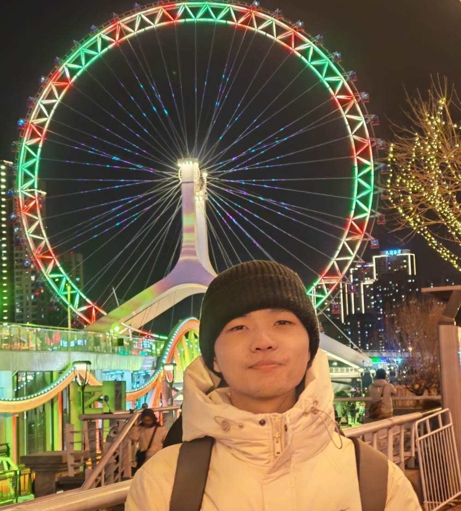

Yale University
Coursework includes Intelligent Robotics, Advanced Robotic Mechanisms, Sequential Decision Making, Trustworthy Deep Learning, and Advances in Frontier AI Models.

M.S. Student
Computer Science, Yale University
I am a master’s student in Computer Science at Yale, in the Inquisitive Robotics Lab with Professor Tesca Fitzgerald. Mandarin is the language I grew up with. English is the language of my degree, my papers, and most days in the lab.
I earned my B.S. from Kean, with a minor in applied mathematics, and did the research at Wenzhou-Kean. Since then the rooms have changed: a summer at Stanford, half a year in Beijing, a summer at Notre Dame, and now New Haven. I have usually been the new person, and I have usually been expected to produce. That is the part of my training I trust.
What I notice first is the step an explanation skipped. From 2023 to 2025 I tutored more than eighty students at Wenzhou-Kean, often someone capable and stuck. The useful hour was the one where I found the missing step and started again from there. The same habit showed up at Notre Dame, with biologists and epidemiologists who needed a number attached to the right experiment. I want the work to be usable by the person who has to live with the answer.
I am early in the methods I most want to learn, and I try to be exact about what I can already do. Detection, retrieval, and reading scientific papers are the skills I brought with me. The project with Professor Fitzgerald is still at the beginning, and I will describe it that way until there is a result to report. The papers and the questions live on the research page.
Away from the desk I run, and I ride. A long ride across Tibet is the clearest picture I have of how I like to work: climb, rest, look up, keep going. I carry a camera on slow trips — Tibet, California, Zhoushan, Datong, Sri Lanka. The photographs are on the personal page.
Coursework includes Intelligent Robotics, Advanced Robotic Mechanisms, Sequential Decision Making, Trustworthy Deep Learning, and Advances in Frontier AI Models.
GPA 3.92/4.0. Summa Cum Laude. Dean’s List, 2023–2025. The research and the tutoring were at Wenzhou-Kean.
GPA 4.12/4.3. Coursework in high-performance computing, data mining, and stochastic processes.
New Haven. In the lab with Tesca Fitzgerald, still learning the room.
A summer with Samuel Rund, and with scientists who would have to live with a wrong number.
With Guoxin Kang. The first long stretch of research away from my undergraduate campus.
With Baha Ihnaini. I also tutored more than eighty students and kept the lab’s equipment and weekly records, 2023–2025.